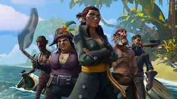

Ultimate Mission
As the ultimate goal of the game can be argued to be whatever the player wants it to be, the most common goal among players is to become a legend of the seas and bathe in the riches that come with it.
Balance
Some may be wondering about where balance plays an effect in the game. Sea of Theieves has many different ways in which they balance the game including the weapons being the same and doing the same damage amongst all players. Ship Combat varies however due to the fact that the players ships range from a two man ship to a four man ship. Although a two man ship sounds like a disadvantage, two man ships are much faster but contain less firepower.
